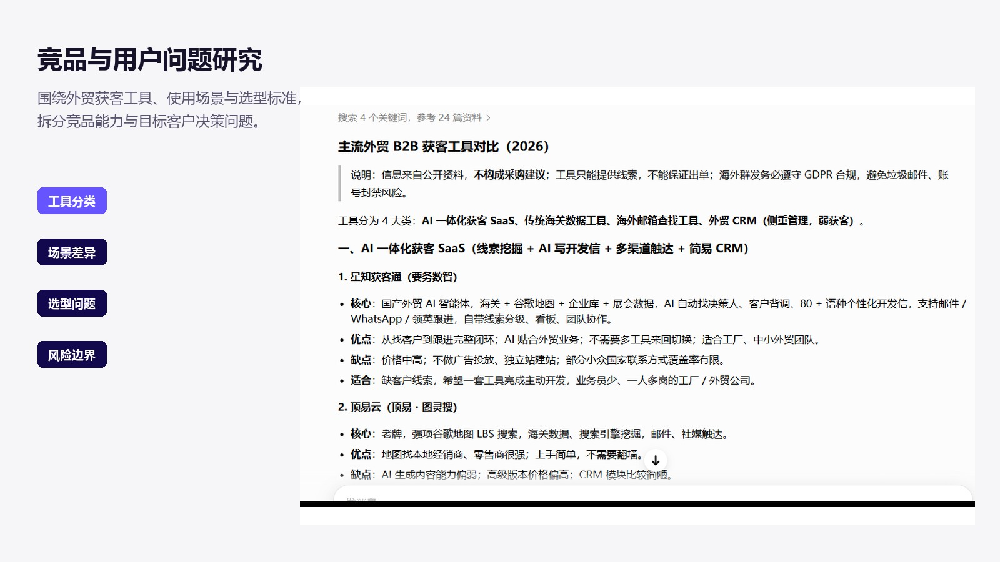
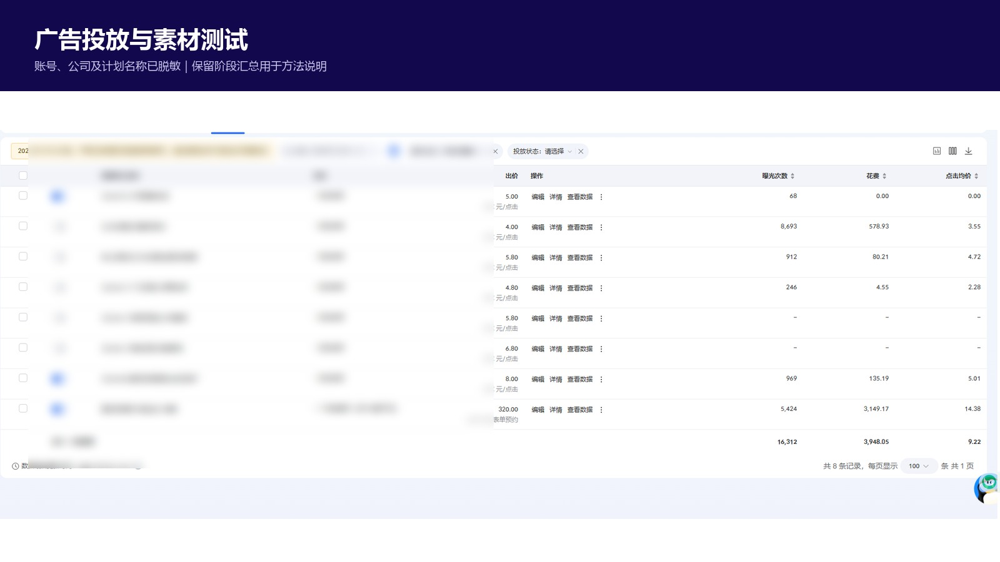
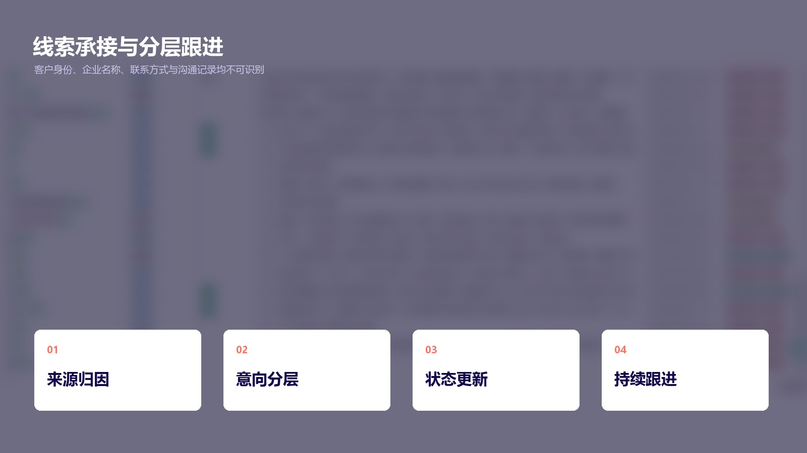

GEO 品牌出现率
0 → 4.2%27届硕士 · 商业化运营 / 产品运营
把复杂产品
讲清楚，推下去。
社工训练让我更懂用户，AI SaaS 实战让我更靠近业务。
我用内容、数据和产品协作，把用户问题变成可验证的增长动作。
PROFILE / 2026 可到岗
运营OPERATIONS
用户洞察内容增长产品协作商业转化
广州 / 深圳2026.08.26 起 · 连续实习 4–6 个月
SCROLL TO EXPLORE01 — 05
IMPACT AT A GLANCE
不是“参与过”，
是用结果说明我做成了什么。
内容累计阅读
13,000+广告获客漏斗
30 / 15+销售线索 30有效线索 15+
公益项目注册增长
4,000+1,000+覆盖学校
* 数据来自阶段性项目口径；GEO 使用 48 个同口径回答样本，团队结果与个人动作在案例中分别说明。
SELECTED WORK
三个案例，覆盖一条完整的运营链路。
从被看见、被理解，到留下线索、反馈产品。我不把渠道动作当终点，而是持续追问它如何靠近用户与业务结果。
CASE 01 / AI SaaS · GEO
从完全不可见，到首次进入 AI 推荐语境。
先用固定问题集建立基线，再把高意图问题拆成内容主题，规划公开平台铺设与公众号品牌承接，最后复测品牌出现与推荐变化。
07.15 BASELINE08.06 RETEST
4.2%品牌出现率
48 个同口径回答样本：品牌出现率 0% → 4.2%，推荐率 0% → 2.1%；豆包形成一次推荐，元宝形成一次提及。
01固定问题集监测02识别缺口与占位对象03规划4周内容资产04同口径复测



CASE 02 / 星知外贸获客通
把内容、广告和客户跟进，接成一条可复盘链路。
负责广告素材与关键词测试、公众号内容运营、表单和企微承接，并在客户仪表盘维护来源、状态、意向与跟进记录。
¥3,000阶段预算
30销售线索
15+有效线索
30 → 300+公众号粉丝
13,000+累计阅读
630+累计转发
25+内容转化线索
产品演示主线
找企业→找对人→个性化触达→识别意向→跟进成交

CASE 03 / 0–1 GROWTH
从教师反馈里，找到增长与产品迭代的连接点。
参与“益师心友”AI心理助手0–1推广，通过教师社群运营、内容触达、用户答疑和反馈分类，把一线问题整理为可执行的产品建议。
触达注册激活反馈4,000+4个月团队新增注册
01场景化内容触达02注册与首次体验03社群答疑和反馈04分类同步产品团队
EXPERIENCE
我的能力，来自真实业务现场。
要务科技 · AI 外贸 SaaS
商业化运营实习生
- 内容增长与 GEO 冷启动
- 广告线索承接与 B 端客户沟通
- 监测工具测试及需求反馈
益师心友 · 公益数字产品
用户运营 / 产品协作
- 0–1 教师用户增长
- 社群 SOP 与用户反馈归类
- 跨团队迭代建议
华南师范大学
社会工作硕士
- 用户同理与需求洞察
- 定性研究与沟通协调
- 预计 2027 年 6 月毕业
WHY ME
社工不是绕路，
而是我理解用户的底层能力。
能听懂
从模糊表达里识别真实需求，尤其适合用户访谈、B 端沟通与反馈分析。
能拆解
把复杂问题变成用户路径、内容策略、指标口径和可执行任务。
能推进
在内容、销售、客户与开发之间对齐信息，让事情持续向结果移动。
LET'S BUILD SOMETHING USEFUL